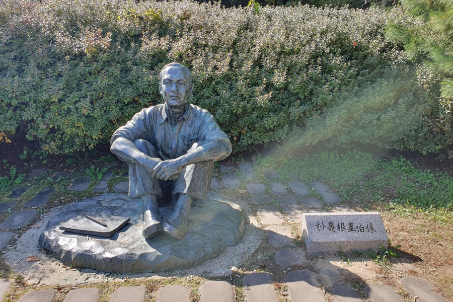
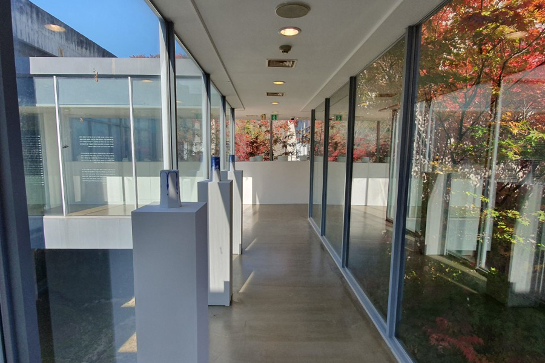
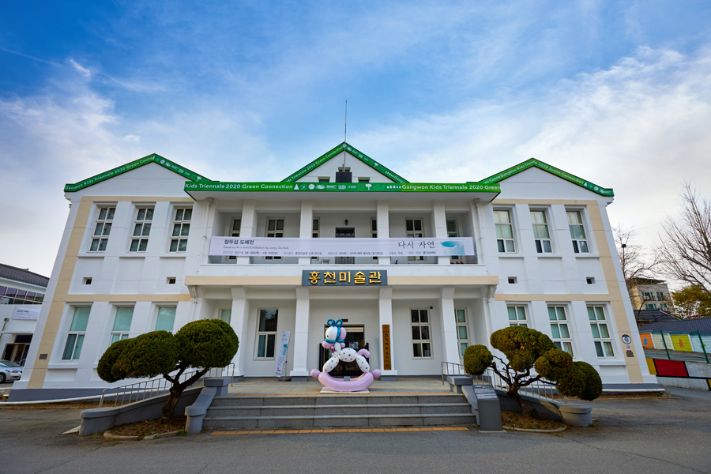
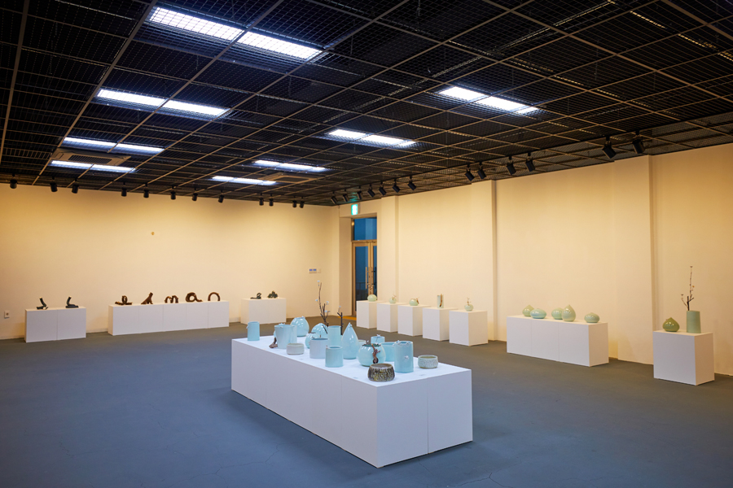

문화예술공간에서 떠나는 감성여행
문화와 예술, 건축이 자연 또는 공간과 어우러져 새로운 문화로 피어난다.
문화예술을 키워드로 강원도를 더욱 깊게 즐길 수 있는 여행지를 소개한다.
<참고 강원네이처로드 매거진>
문화예술 여행지 추천 명소 여행 매거진 - 강원네이처로드


1. 양구 박수근미술관 (우리 민족의 일상을 그려낸 화가 박수근의 발자취)
강원 양구군 양구읍 박수근로 265-15 박수근미술관
우리 민족의 일상적인 삶의 모습을 소박하고도 거친 질감으로 표현해 독특한 화풍을 이뤘던 한국 근대 회화의 거장 박수근.
그의 삶과 예술세계를 기리는 미술관이 그의 생가터에 자리하고 있다.


2. 홍천미술관 (미술관으로 재탄생한 옛 홍천군청사 건물)
강원 홍천군 홍천읍 희망로 55
1956년 홍천군청사로 사용되던 건물이 홍천읍사무소와 상하수도사업소를 거쳐 미술관으로 재탄생했다.
강원도에서 유일하게 근대양식으로 건축된 관공서 건물로 등록문화제 제108호로 지정되었다.


3. 고성 바우지움조각미술관 (힐링을 선사하는 산 속 미술관)
강원 고성군 토성면 원암온천3길 37
바우지움이란 이름은 바위의 강원도 방언인 '바우'와 '뮤지엄'의 합성어다.
우리나라를 대표하는 조각가들의 작품을 전시하는 '근현대조각관' 등으로 구성된 미술관이다.